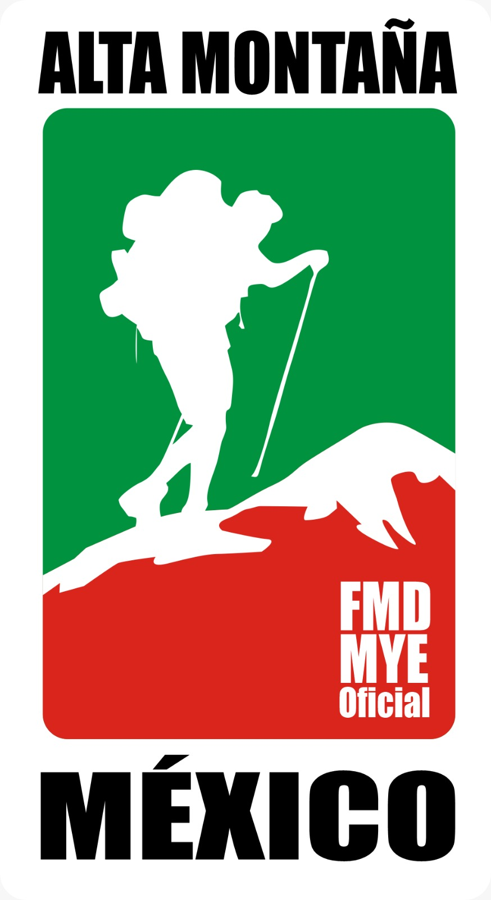
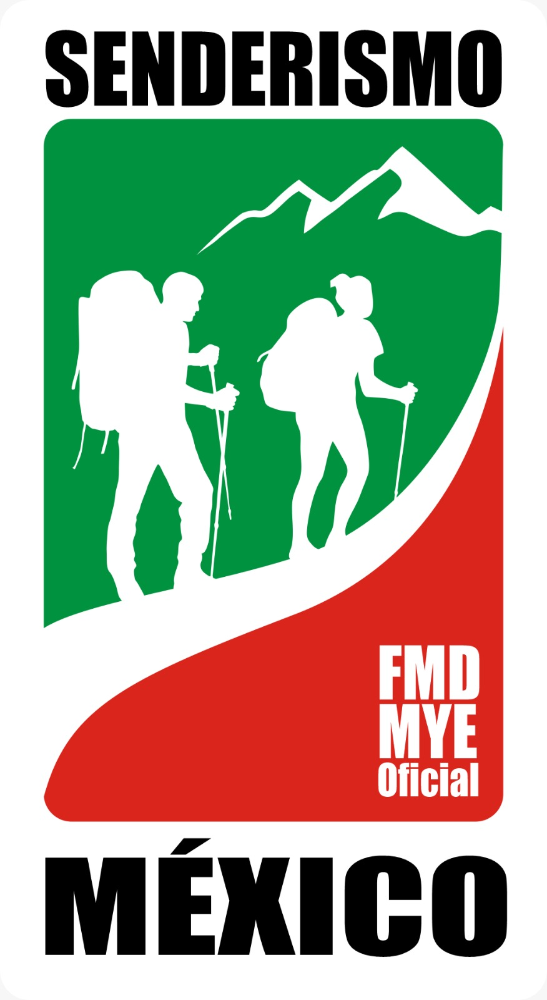
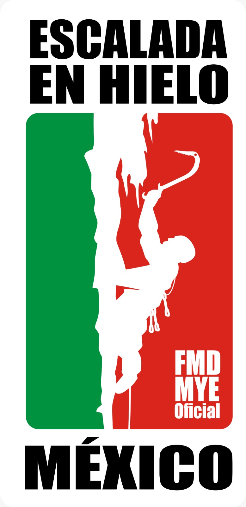
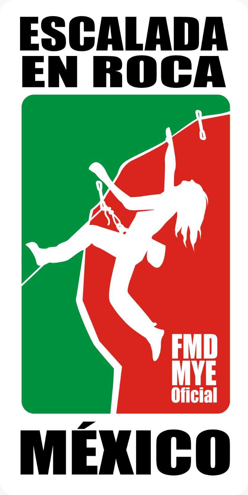
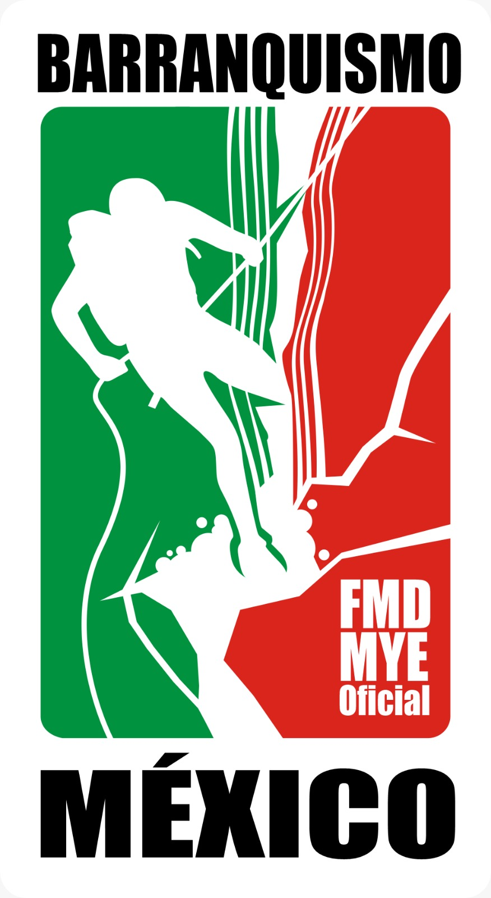

Fotografía del asociado
PERFIL DE CAPACITACIONES
María López Hernández
Asociación · Guanajuato
ID de afiliación DEMO-001
TRAYECTORIA FORMATIVA
Capacitaciones
Formación registrada por disciplina





Deportes de montaña y escalada · México